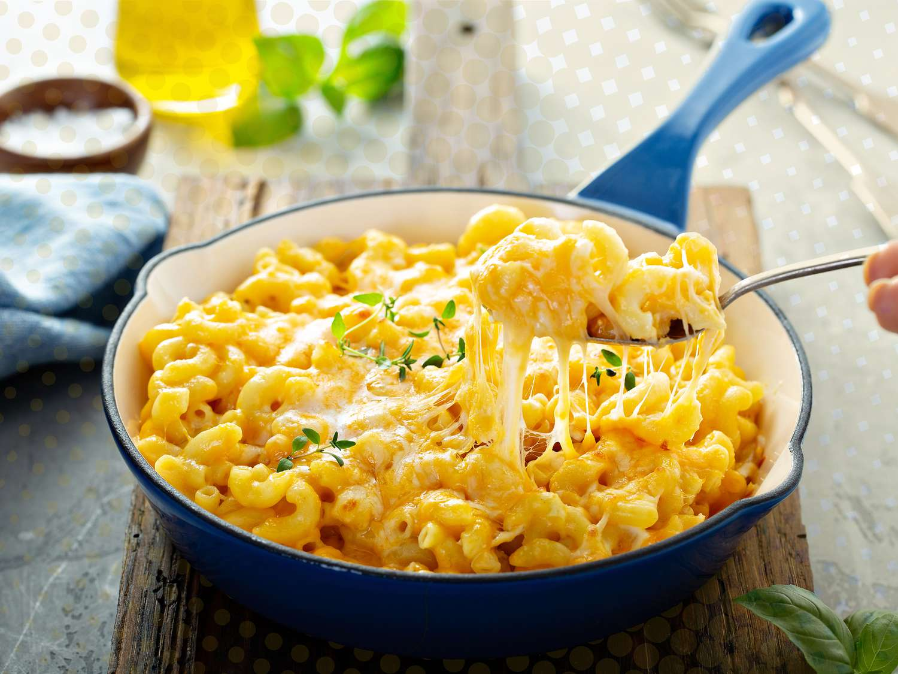

Home
Mac and Cheese

Description
Chef John's New Orleans Mac and Cheese is a beautifully creamy, just-decadent-enough mac and cheese.
Hollow bucatini pasta takes on the Cajun-spiced sauce magnificently, and the classic Holy Trinity of
vegetables is so good you'll wonder why you've never thought to use it before.
Ingredients
- 2 tablespoons olive oil
- 1 cup diced onion
- 1 cup diced celery
- 3/4 cup diced bell pepper
- 4 tablespoons unsalted butter
- 1 teaspoon smoked paprika
- 1/2 teaspoon freshly ground black pepper
- 1/4 teaspoon garlic powder
- 1/4 teaspoon ground cumin
- 1 teaspoon kosher salt
- 1/4 cup all-purpose flour
- 1 cup heavy cream
- 4 cups milk
- 8 ounces sharp Cheddar cheese
- 8 ounces Monterey Jack cheese
- 1 pound dry bucatini pasta
- 1/4 teaspoon cayenne pepper (optional)
Steps
- Heat oil in a saucepan over medium-high heat. Add onions and sauté for about 2 minutes.
Add celery and bell pepper, and continue to cook and stir until onions turn soft and
translucent, 3 to 5 minutes.
- Add butter, paprika, black pepper, garlic powder, cumin, and salt, and sauté until
butter is melted and spices are fragrant, 1 to 2 minutes. Stir in flour, and cook,
stirring, for about 2 minutes.
- Pour in cream and milk, and whisk thoroughly, incorporating any flour that is stuck
to the bottom of the pan. Bring sauce to a simmer, whisking occasionally, then reduce
heat to medium-low; simmer for 5 minutes, stirring occasionally.
- Turn off the heat, and stir in 3/4 of both Cheddar and Monterey Jack cheese. Move cheese
sauce to the back of the stove while you boil the pasta.
- Preheat the oven to 425 degrees F (220 degrees C).
- Bring a large pot of salted water to a boil, and cook bucatini for 30 seconds less than directed on the package.
- Drain well and transfer into a 9x13-inch casserole dish. Use tongs to quickly arrange pasta into an even layer. Ladle
over cheese sauce, and use tongs to move pasta around until it is evenly coated and uniformly distributed.
- Top with remaining cheese. Sprinkle the top with cayenne pepper.
- Bake in the preheated oven until the top is golden brown and sauce is bubbling around the edges, about 30 minutes. Let
rest for 10 minutes before serving.